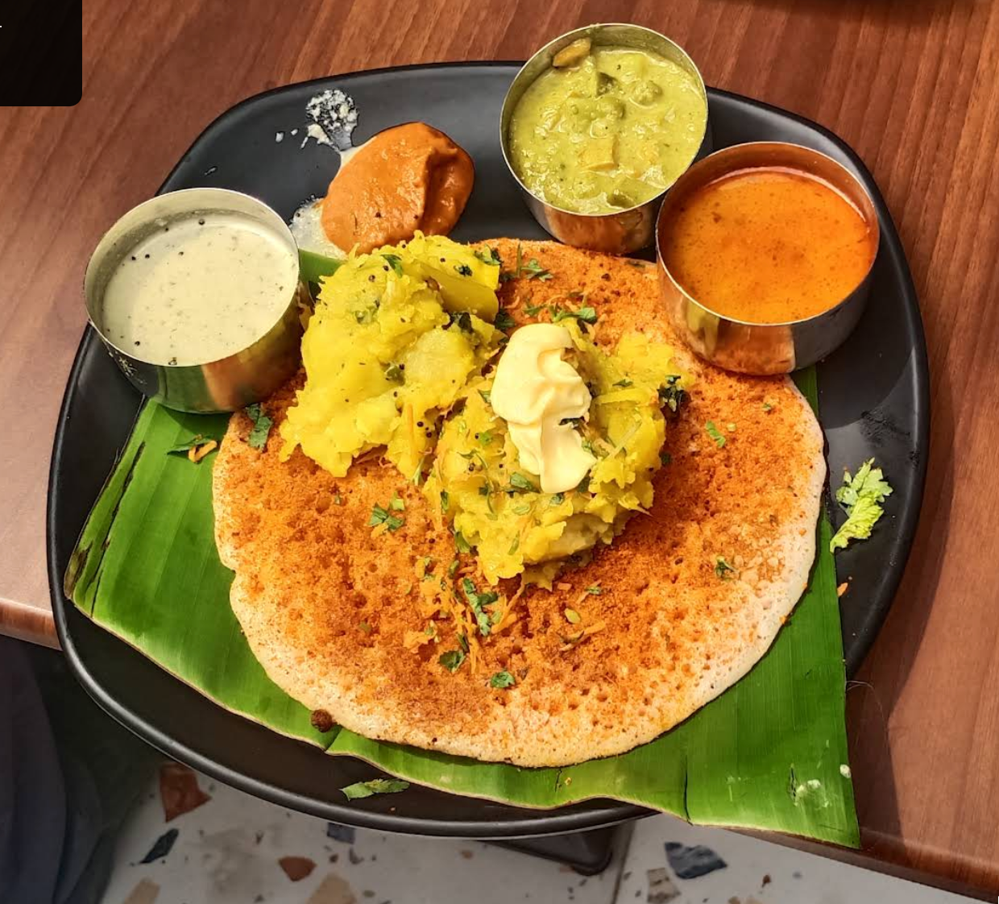
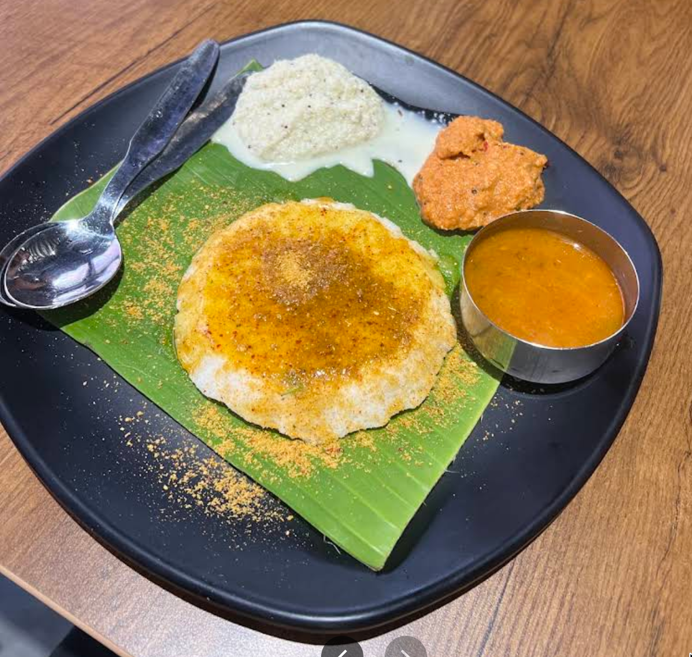
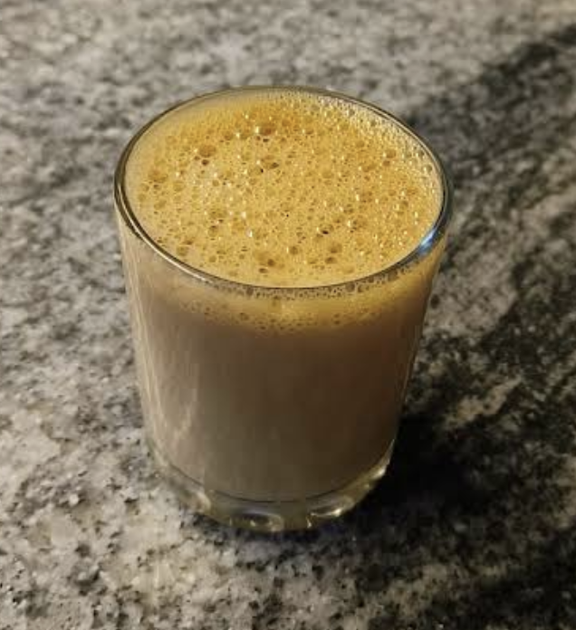
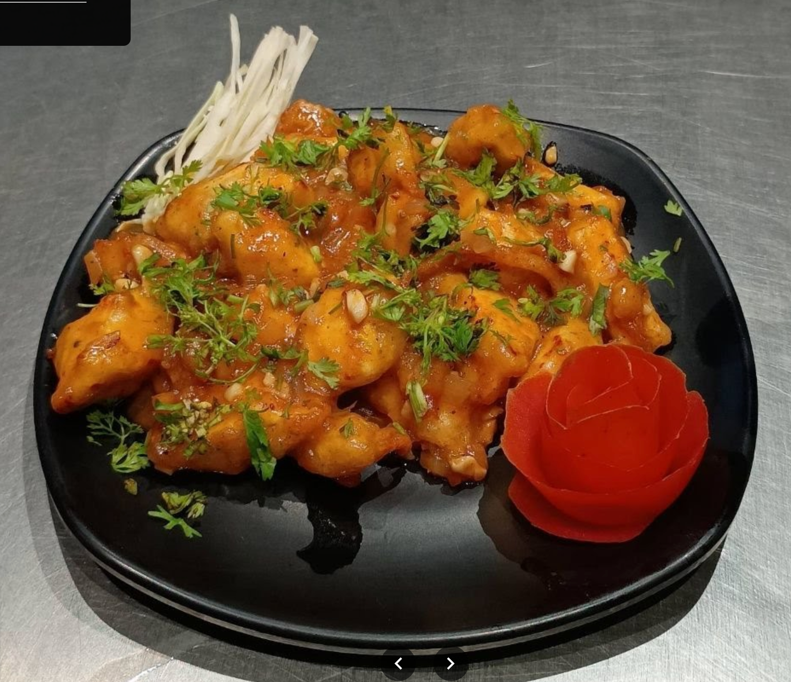

SOUTH INDIAN
01Masala Dosa
A golden, crisp classic for your breakfast or anytime craving.
A vegetarian food stop in Nagarbhavi
From familiar South Indian breakfasts to snacks and refreshing drinks, find your everyday favourites at Mayura Cafe and Food Court.
A few local favourites

A golden, crisp classic for your breakfast or anytime craving.

Soft, simple and satisfying, served with classic accompaniments.

A familiar cup to pair with a snack or a little conversation.

A savoury Indo-Chinese favourite for snack time.
Food photographs are for presentation. Availability and preparation may vary.
Your neighbourhood food stop
Mayura Cafe and Food Court brings together familiar vegetarian favourites in one neighbourhood stop. Drop in for a South Indian breakfast, pick up a quick bite or make time for a cup of tea.
Our aim is simple: everyday food, approachable choices and a welcoming place in Nagarbhavi.
Come by today
Find us in BDA Layout, Nagarbhavi, Bengaluru.
Get directions7, 3rd Block, BDA Layout,
2nd Stage, Nagarbhavi,
Bengaluru, Karnataka 560072
Weekdays: 8:30 AM–10:00 PM
Weekends & holidays: 7:30 AM–10:00 PM
Hungry yet?